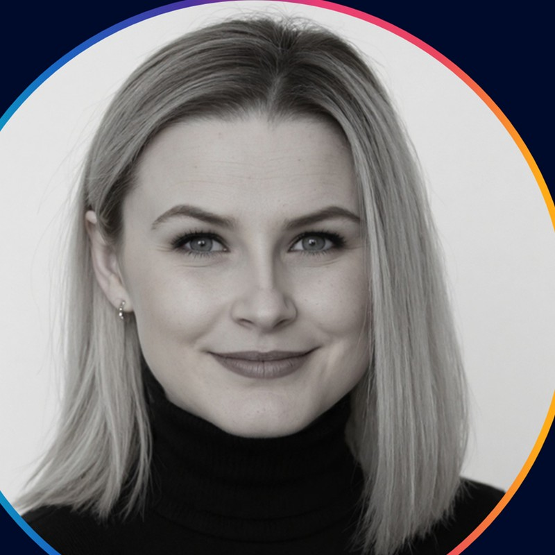
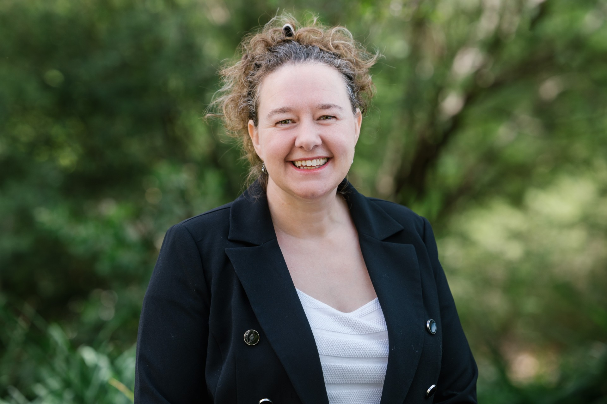

Charmaine McGowan
Founder & Lead, Canberra Data Week
Leading Canberra Data Week and bringing the city's data community together.
LinkedIn profileCanberra Data Week 2026
Our volunteers, community connectors and contributors create the welcoming, collaborative spirit that makes Canberra Data Week possible.
Community members
Celebrating the people who contribute their time, energy and connections to help Canberra's data community come together.
Founder & Lead, Canberra Data Week
Leading Canberra Data Week and bringing the city's data community together.
LinkedIn profile
Event Emcee & Community Contributor
Supporting Canberra Data Week and helping connect the community as event emcee.
LinkedIn profile
Volunteer & Community Connector
Helping bring Canberra Data Week to life.
LinkedIn profileWebsite Launch Architect
Helped turn the Canberra Data Week website from an idea into a live home for the festival.
LinkedIn profile
Festival Ideas Catalyst
Shared creative ideas that helped shape the festival and spark new possibilities for the community.
LinkedIn profile